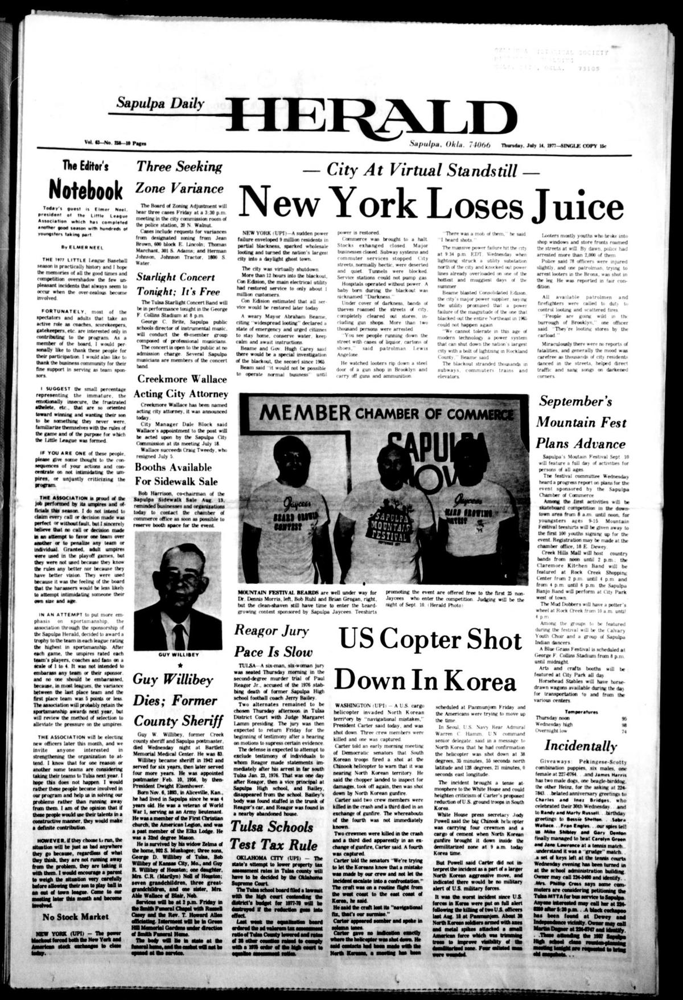

HN HN-712 · July 21, 1977 · Crime, Law & Justice > Robberies, Burglaries & Theft > Major thefts
Source: Nappanee Advance-News, p. 4 — original editorial page.
Report: An editorial about the New York City blackout condemned looting as theft from shop owners, drawing on televised reports and interviews with people displaying goods they had taken.
Assessment: A moral reaction to broadcast images, not a complete social account of the July 13–14 blackout. The page documents how events were understood outside New York; it does not establish how representative those images were, the cause of the electrical failure, or individual culpability.
Authentic images retrieved from Gateway to Oklahoma History (Oklahoma Historical Society). Article crops are located using the archive's own OCR word coordinates and rendered at native crop resolution; article clips are assembled from the archive's own article-block images; page scans are reduced-size access renditions. No images were generated, mocked, or retouched.

Not yet acquired. Queued for provider-specific acquisition testing (see source-acquisition manifest).
URL (preserved verbatim): https://newspapers.library.in.gov/?a=d&d=NAN19770721.1.4
Saved research report: Historical_Newspaper_Event_Research_703-727_2026-10-23.md
Evidence note: A newspaper report means a historical publication made a claim; it does not establish that claim as fact. Contemporary reporting is separated from later scholarly context and our own assessment.